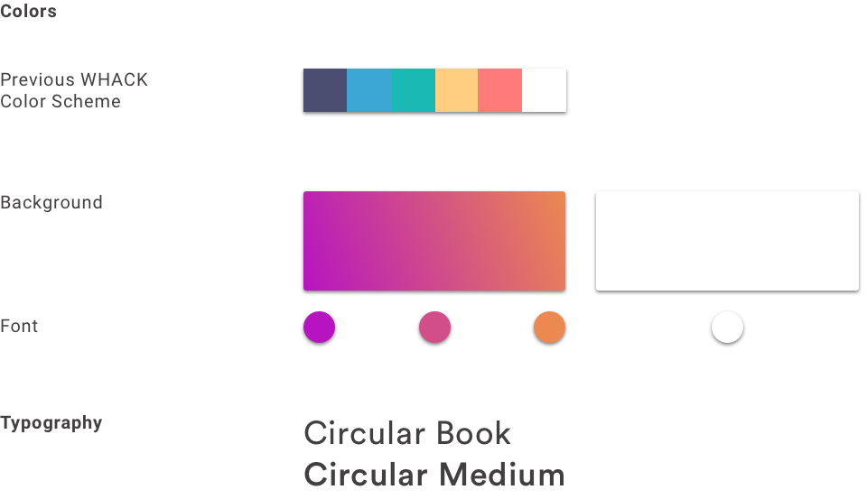
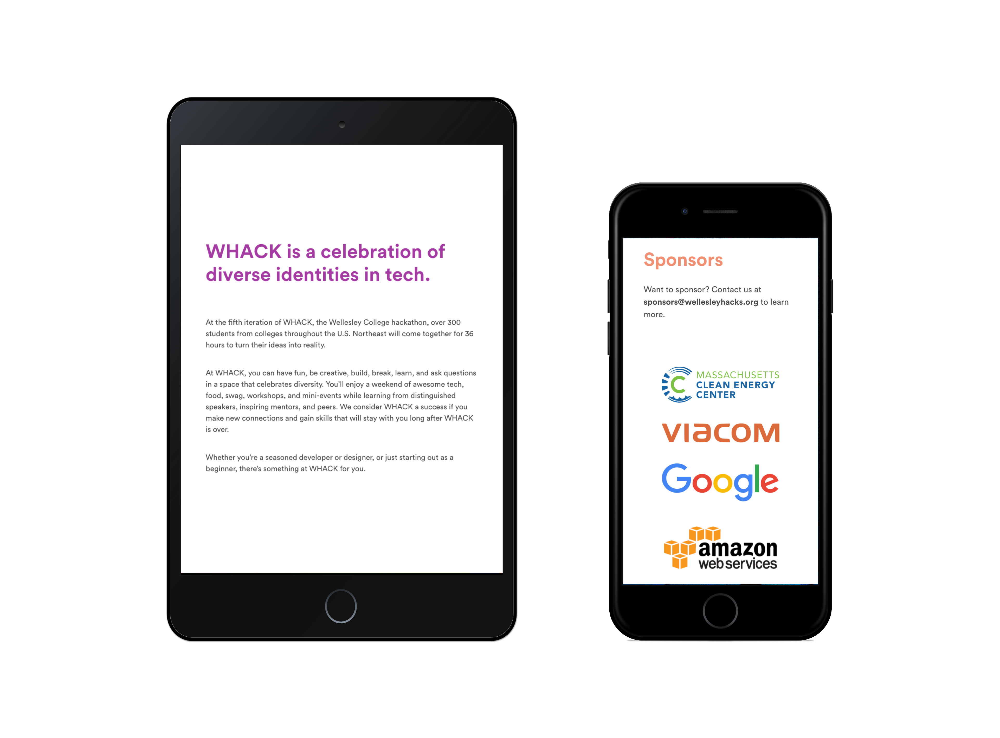

Goals
Explore the rich timeline of Chinese characters that spans across three powers of ten in years (oracle bone script to today's tech-assited usage of simplified characters)
Pose questions on how our language decisions reflect today’s issues of digitization and culture
Concreting a universal representation of the transformation of Chinese language
Design Process
Brainstorming
Brand Identity
My goal in developing an updated visual identity for WHACK was to promote its welcoming, creative, and fun essence. The previous hackathon heavily relied on a darker indigo shade that I decided to tweak the indigo into a brighter shade. Using the brighter purple, I used a linear gradient by adding orange to give a sense of depth. We used the other previous WHACK colors for the illustrations on the website.
For the fonts, we chose a geometric sans serif called Circular that gives warmth and a universal appeal.
Design Explorations

Social Media
From Snapchat filters to Instagram Stories, we made sure that word about WHACK got out! We posted periodic announcements and updates on hackathon organizing leading up to event, and posted frequent live updates during the 36-hour hackathon.
We used open graph tags to optimize our website for sharing across all social media platforms. The image contains a strong call to action to register.

To optimize our social media banner across different platforms, we created banners in custom dimensions for Twitter, Facebook, and Devpost.


Apparel
I was inspired by the connectivity of computer nods and other tools of technology hackers use during the hackathon. Organizers and volunteers wore a white shirt so they could be easily identified if anyone had questions.
Final Design
Mobile 